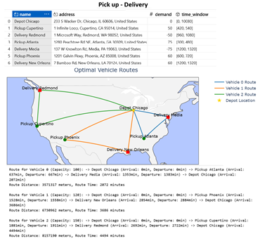
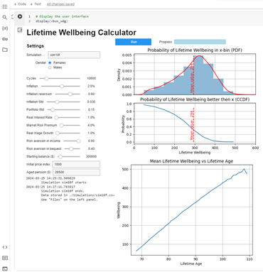
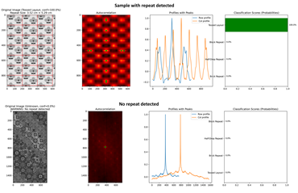
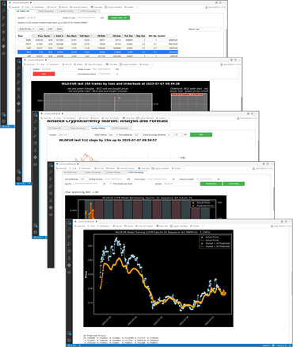
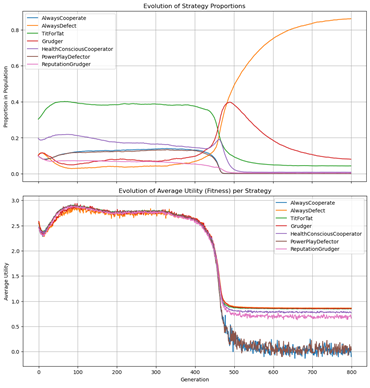
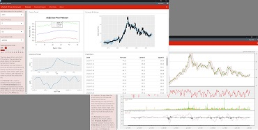

Jupyter Notebook solves a complex logistical problem called the Vehicle Routing
Problem with Pickup and Delivery (VRPPD) using Google's OR-Tools library. This GIS
development finds the
most efficient routes
for a fleet of vehicles to pick up items and deliver them to specific locations, while also
respecting constraints like vehicle capacity and time windows. In essence, the script takes
real-world logistical data, transforms it into a format
OR-Tools can understand, calculate real distances over
Google Maps Service API, and then uses a
powerful optimization engine to find the best possible
solution, which it then presents in a clear, easy-to-understand format.
This Jupiter Notebook calculates the view period ratio for a satellite and ground station pair as
the
asymptotic fraction of time the satellite is able to communicate with its ground station
according to Dr. Lo's theory. In
particularly, the code solves the article equations 12 and 14 for circular and elliptical orbits
correspondingly. UI accepts Satellite Altitude, Inclination,
Eccentricity, and Field Of View and Station Latitude and Elevation. In the result, it provides
the satellite View Period Ratio

This AI Chatbot studies TXT, PDF, or DOCX documents attached to a chat user message. After that,
it answers questions, finds features, writes annotation, or reviews the files content.
The backend Python code has to be
running on the chat owner PC. It builds a 'llama-index' model, which processes the user query
and sends the prompt to OpenAI API. At last, the program returns AI response to this chatbot.
Access to the chat may be granted by the chat owner.

This Jupiter Notebook simulates lifetime financial well-being of a typical household. The
simulation moves
forward by years from the age of 67 to the year of the investor's death, summing up financial
wellbeing over the years of life (Mortality and Life Expectancy data were taken from Australian Life Tables). The state variables of portfolio return,
inflation and living/dying, evolve each year. The well-being in any particular year is a concave
function of the income in that year plus the bequest if the investor dies in that year.
This Jupiter Notebook Objective is to optimize the number and locations of warehouses (or stores)
to provide the best coverage of customer demand spread over a country.
The only parameter of the clustering is the maximal delivery distance (120 miles in the
example).
For the case of USA, ZIP code locations were taken here and were limited by the contiguous United States.
Performance vs Number of Clusters were investigated. In the range of 10 to 130 clusters the
demand coverage grows from 47.7 to 99.6%. So, 90 ZIP centers cover 99% of Demand inside 120
miles neighborhood.
This Jupiter Notebook calculates Cronbach's alpha as a measure of internal consistency of survey
groups, and
correlations between responder groups. Mapping the answers to the binary scale it gets confusion
matrices for every pair of the
subscales and estimate predictive abilities. For the sake of deeper analysis, this code splits
the responses into several groups by similarity of
answers and curry out the upper analysis inside every of the clusters.

This Jupyter Notebook code is intended to detect if an image contains a repeating pattern (tile)
and, if so, estimate the repeat size in pixels (and optionally convert to cm if DPI is
provided).
This script:
Loads the image in grayscale.
Computes 2D autocorrelation via FFT.
Extracts central row/column profiles.
Finds repeating distances using peaks.
Returns repeat size in pixels (and cm if dpi is provided).
Output shows the original image, the autocorrelation heatmap with detected peaks, and the
row/column profiles with peaks marked.
This Jupiter Notebook calculates Revenue and Risk of a stock daily trading. The stock price
history is downloaded from
Yahoo
Finance API.
The program calculates the revenue as cumulative sum of daily returns and estimates risk
using rolling window standard deviation (volatility). User may change the stock symbol, number
of days in the rolling window, and number of years of the price history.

Jupyter Notebook with friendly User Interface.
The tool allows users to look inside the process of a market price formation.
It fetches data via Binance API,
decrypts and visualizes trades history in intelligible way. The application tracks trades and
Orderbook in the
real time, that demonstrates clearly moving factors of price oscillations.
The tool builds Long Short-Term Memory (LSTM) model with a set of tuning parameters,
Check the performance with backtesting,
Predict the future prices.
It is a good example of how to use TensorFlow for building and training deep learning models, enabling
advanced
analysis and prediction capabilities on cryptocurrency market data.

This is a simulation aiming for determine the best strategy to survive in the
Iterated Prisoner's Dilemma (IPD) evolutionary game. It calculates the fitness of every strategy
as a mean value of Utility of all players with
the given strategy. The fitness is a measure of how well a strategy performs in the game.
This process is following the Evolutionary Game Theory and aimed to observe the population
dynamics.
The plot shows how different strategies rise and fall. Strategies that are
"more successful" (higher fitness) will see their lines go up, while less successful ones will
go down.
This R-Shiny project. It uses Natural Language Processing to explore the sentiment
polarity and averaged emotion distribution through the tweets which contains the pointed
keywords. Text network analysis shows prominent clusters of words which concern the subject.
With Emotion Rate of tweets the most joyful and most fearful tweets can be extracted.

This is R-Shiny Web-application that predicts stock price trends in upcoming days of Daily Stock
Trading.
The code uses 'Quantmod' R-package for getting price history and Facebook 'Prophet'
package for the prediction.
This is Python Plotly interactive visualization in 5D spaces using a marker color and size as
additional variables.
This R-Shiny Warehouse Dashboard application implements Market Basket Analysis to reveal
correlations and
clustering
of different product sales. It uses 'arules' package for getting rules and 'flexdashboard'
package for R-Shiny.
This Jupiter Notebook analyzes all active traders trades records in a selected period of history
of a stock market.
It calculates Win-Rate and Average Return, ranges the traders by these indecies and then
visualizes the trades results using two Simple Moving Averages as Long and Short Time Memory
assessments.

This project was made in RapidMiner
platform.
Credit Risk predictive models was trained on a set of client credit histories. Here Decision
Tree Model and Logistic Regression Model were built and
compared. The model processes included the data mining and analysis, section of independent
variable subset, splitting the data into the training and test subsets, building the models on
the train subset and applying it to the test one, the performances (confusion matrices)
calculations and summarizing the prediction ability of the models.
This Jupiter Notebook loads a daily time series of a set of products sales and provides
predictions in the two models:
Prophet Model Forecast:
Prophet is an open-source library developed by Facebook and designed for automatic forecasting
of univariate time series data.
Scale Model Forecast:Scaling factor is calculated as a mean value
of scales for sales averaged over the set of Simple Moving Averages (SMA). Argument
'day_windows' defines a set of corresponding Sliding Windows, like [60, 30, 90], up to 6 windows
allowed. Number at the first position in the list (60 in the example above) is the number of
days to predict.
This R-Shiny Web-application
reads and summaries the history of sales, trains a predictive model, and makes a forecast for
the chosen number of days. The source of the data is a net of shops storing the sales history in
SQLite database.
Package 'prophet' is used to build the model and forecast. It successfully reveals
yearly, weekly, and daily seasonality, plus (optional) holiday effects. It works best with time
series that have strong seasonal effects and several seasons of historical data. Prophet is
robust to missing data and shifts in the trend, and typically handles outliers well.
This R-Shiny Web-application fetches and analysis Binance-exchange trades history for a set of
symbols, and
then estimates HFT profitability by analyzing Bids and Asks frequencies and optimizing P&L.
A solar panels power plant with maximum power control is a kind of the hybrid systems with
Zeno
behavior. Matlab/Simulink
model of Sliding Mode Control (SMC) and Pulse Width Modulated Control was built to compare the
performances with the pre-calculated Maximum Power Point Tracker and carry out digital
experiments to investigate the model dynamics at different environment conditions. The target of
SMC is a power maximization in 2D space of photo voltage and current variables in accordance
with Lyapunov theory of
equilibrium of a system of Partial Derivative Equations. The control switches Dynamics and the
maximum Photo Voltage power tracking for a case of sinusoidal variation of irradiance are shown
on the charts.

This is R-Shiny Web-application, Ultraviolet Germicidal Irradiation (UVGI) scientific calculator
that has
been used to facilitate the engineering and design of an air-purifying equipment, being
developed for use in hospitals, commercial and residential applications during COVID-19
pandemic. It calculates the degree of
virus inactivation in UVGI air-purifier device taking into
account the processed room air volume and the virus survive parameters.
This is Jupiter Notebook that sets connection to
Binance-exchange API and retrieves a list of historical trades for a given set of
symbols.
The parameters passed to the function are the symbol, the maximum number of trades to
be retrieved and the ID of the trade from which to start retrieving. The function reads the high
frequency trade history hour by hour and combines the rows into one dataframe for further
statistical analysis.
As it is shown on the picture, the program analysis the price and cash flow oscillations, and
Bids
and Asks distributions around the dynamically changing midprice. Then, it finds the optimal
values of the next Bid and Ask which would optimize P&L.
Bubbles induced fluctuations of some properties of aqueous solutions
were
proposed as an origin of observed phenomena of water luminescence under Infra-Red
radiation.
Mathematical model of the air diffusion through water to
surface were built and coded in Matlab. The numerical solution shows oscillations of the
dissolved air concentration. Fast Fourier Transform and Wavelet Analysis shown that bubbles
self-oscillations have a form of fractal with an infinite sequence of periods, which evolve in
time and that is qualitatively consistent with the experiment.
.
This is a gif-animation of a series of mortality statistics from 1800 to 2012 by 4 years grid. It
demonstrates significant picks of the mortality in the known periods of war and global
pandemics. The data was mining from Wikipedia Pages dump with the help of
special XML parser.
Hierarchical classifier tool
developed for investigation of Wikipedia data revealed a hidden revolution of human priorities.
This project backtested the classical trading strategy called "Pair trading" in set of stock
market securities.
This way a portfolio assets were specified for pair trading and potential profitability.
Analysis were based
on the idea of Cointegration that is a statistical feature of time series proposed by
Engle and Granger. The code implemented three main methods of testing for cointegration:
Engle-Granger Two-Step Method, Johansen Test, and Maximum Eigenvalue test.
CIMDO stands for "Conditional Independence Model-based Density Optimization".
It is a method of optimizing stock portfolios that takes into account distress dependence
among banks in a system.
The approach defines the banking system as a portfolio of banks and infers the system's
multivariate density (BSMD) from which the proposed measures are estimated. The BSMD embeds the
banks' default inter-dependence structure that captures linear and non-linear distress
dependencies among the banks in the system, and its changes at different times of the economic
cycle. The BSMD was recovered using the CIMDO-approach, that in the presence of restricted data,
This is Jupiter Notebook tool that allows users to improved density specification without
explicitly imposing parametric forms that, under
restricted data sets, were difficult to model.


{kind=link}
{kind=link}
{kind=link}
{kind=link}
{kind=link}
{kind=link}
{kind=link}
{kind=link}
{kind=link}
{kind=link}
{kind=link}
{kind=link}
{kind=link}
{kind=link}
{kind=link}
{kind=link}
{kind=link}
{kind=link}
{kind=link}
{kind=link}
{kind=link}